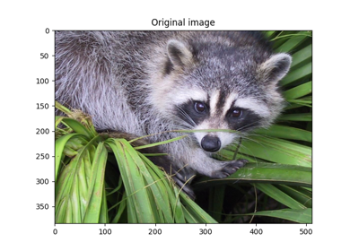
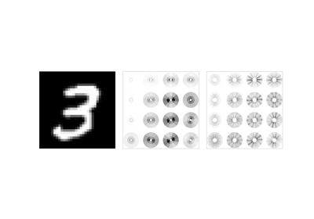

2D examples¶
These scripts demonstrate the capabilities of the 2D scattering transform
class, Scattering2D.



Inverting scattering via mse

Scattering disk display

Regularized inverse of a scattering transform on MNIST
Regularized inverse of a scattering transform on MNIST